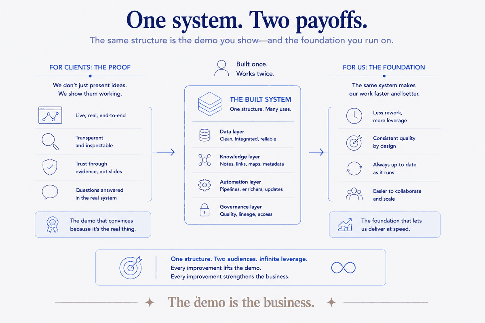

The consultant's quiet contradiction
There's a failure mode that technical buyers can smell from across the table. A consultant arrives preaching discipline — structure your data, govern your models, build the foundation before you chase the shiny thing — and then you glimpse how they actually work: a chaos of ad-hoc documents, a slide deck rebuilt from scratch every engagement, "best practices" they've never applied to their own operation.
The message and the machinery don't match. And once you've seen that gap, everything the person says afterward is discounted. They're selling a discipline they don't live.
I decided early that I would not have that gap. If my whole thesis is that structure beats magic — that the value of AI comes from the structure you give it, the metadata, the rules, the deliberate model, not from the tool's cleverness — then my own knowledge, my own content pipeline, and the way I run my own practice had better be built exactly that way. Not as a nice-to-have. As the point.
The demo is the business
Behind the articles you read is a working system. A structured second brain where knowledge lives as atomic, linked units. A database view built over that knowledge, so it can be queried, checked for gaps, and clustered into themes. A publishing pipeline that generates the site from that single source — no copy-paste, no drift. AI passes that enrich, validate, and recompose the units into new formats.
The instinct is to call that "back-office tooling" — the unglamorous plumbing behind the real product. That instinct is wrong. The plumbing is the product. The system that produces the content is a more convincing argument for the method than any article about the method could be. When I explain how a knowledge base should be structured so AI can work with it, I'm not describing a hypothetical — I'm describing the thing that just published the words you're reading.
That's why this stance sits in the same family as two others I hold: proof, not slides — ground every claim in a real system, never a mock-up — and show the machinery — don't describe the result, open the hood and show the working thing that produced it. Practice-what-you-evangelize is what makes those two possible. You can only show the machinery if the machinery is real.

It's also the most efficient foundation
Honesty is the obvious reason to practice what you evangelize. But it isn't the strongest one. The strongest one is that building your operation on the method is simply the most efficient foundation you can have.
Building the engine on the method forces the method to be real. You cannot hand-wave a step when you have to actually run it on your own data every day — the weak parts surface immediately, before a client ever finds them. It compounds: the system that teaches structure gets more structured with every use, because every piece of work you do feeds back into it (the compounding brain at work on its owner). And it collapses the usual duplication between "what I preach" and "how I work" — there's one system, not two, so improving how you work is improving what you teach.
The alternative — evangelizing structure while running your own shop on chaos — isn't just dishonest. It's expensive. You maintain two mental models (the clean one you sell, the messy one you live), you rebuild your own outputs constantly, and you never get the compounding, because chaos doesn't compound. It just accumulates.
The discipline this demands
This is not a comfortable stance to hold, because it removes your excuses. You can't tell a client to structure their knowledge while yours is a mess. You can't sell a validation discipline you don't run on yourself. You can't preach "give the recipe" and then have no kitchen worth selling. The stance forces the work.
But that's exactly why it's worth holding. It's a standing commitment that the thing I sell is a thing I do — visibly, on my own data, in public. The foundation isn't behind the pitch. The foundation is the pitch.
Where this leaves us
Everything on this hub is downstream of that commitment. The thesis, the named concepts, the engine that turns one body of knowledge into articles, courses and talks, the machine that publishes this very site — none of it is theory I read somewhere. It's the operation I run, shown with the hood open.
If you're building — or rebuilding — the foundation your own organisation runs its knowledge and AI on, and you'd rather learn it from someone whose foundation is visible and real than from someone with a polished deck and a hidden mess, that's the conversation to have. The foundation is the case study, and it's open for inspection.